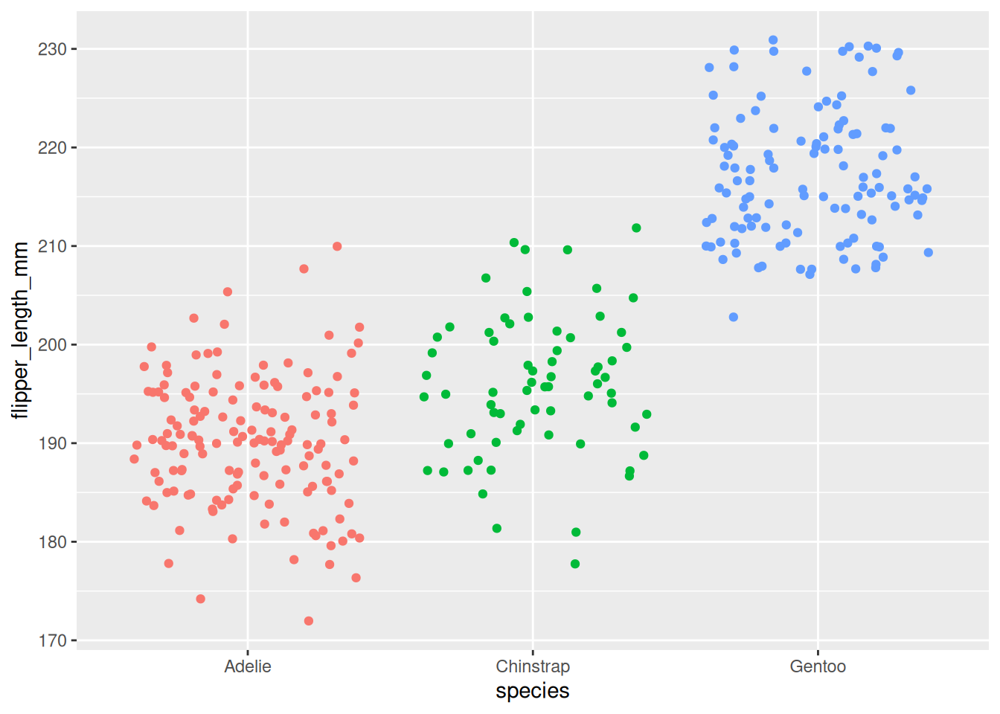
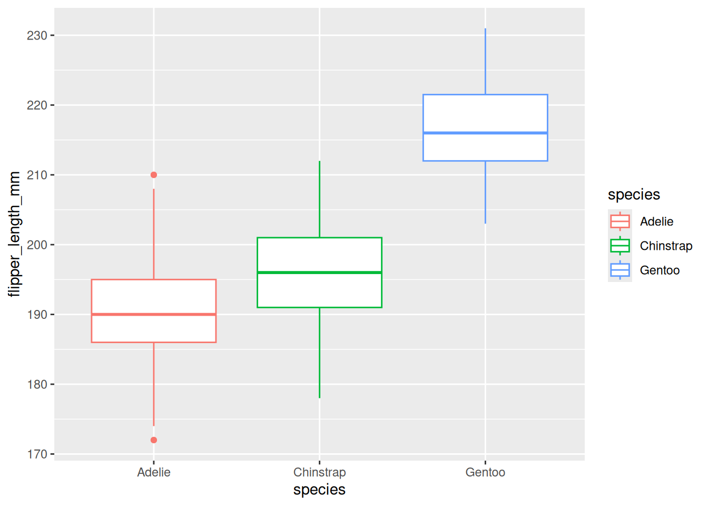
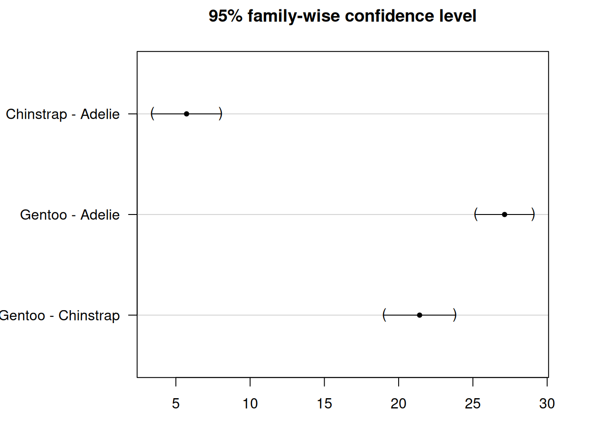
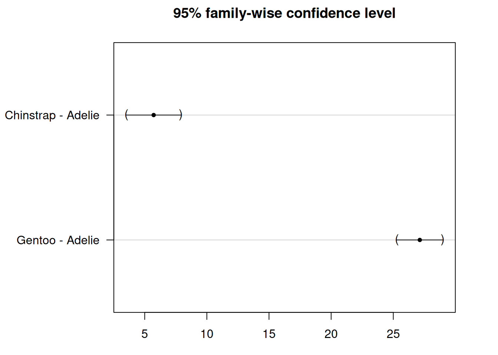

Post-hoc tests mengidentifikasi kelompok mana yang berbeda setelah ANOVA signifikan
Melakukan post-hoc test dengan glht()
Cara melaporkan hasil ANOVA dalam format ilmiah
Memvisualisasikan hasil ANOVA dengan ggplot2
3.2 Apa itu ANOVA?
ANOVA adalah singkatan dari Analysis of Variance (Analisis Variansi). Ini adalah metode statistik yang digunakan untuk mengetahui apakah ada perbedaan signifikan antara rata-rata dua kelompok atau lebih. Dengan kata lain, ini membantu kita menjawab pertanyaan: Apakah rata-rata kelompok berbeda satu sama lain, atau apakah perbedaan hanya disebabkan oleh kebetulan acak?
3.3 Kapan Kita Menggunakan ANOVA?
Jika Anda hanya memiliki 2 kelompok, Anda dapat menggunakan t-test untuk membandingkannya.
Jika Anda memiliki 3 kelompok atau lebih, ANOVA adalah alat yang lebih baik untuk digunakan.
3.4 Jenis-jenis ANOVA
Ada beberapa jenis ANOVA tergantung pada desain studi (seperti one-way, two-way, atau repeated measures).
Dalam kursus ini, kita akan fokus pada one-way ANOVA, yang merupakan versi paling sederhana. Ini disebut “one-way” karena kita melihat efek dari satu faktor atau variabel independen.
3.5 Membandingkan Fenotipe Antar Spesies Penguin
Bayangkan Anda adalah peneliti satwa liar yang mempelajari penguin di Antartika. Anda memiliki akses ke data dari tiga spesies penguin yang berbeda:
Adelie
Chinstrap
Gentoo
Anda penasaran: Apakah spesies penguin ini memiliki panjang sirip rata-rata yang berbeda?
Panjang sirip dapat memberi kita banyak informasi tentang bagaimana penguin berenang, berburu, dan beradaptasi dengan lingkungan mereka.
Untuk mengeksplorasi pertanyaan ini, Anda menggunakan dataset yang disebut penguins, yang berisi pengukuran nyata dari 344 penguin. Di antara banyak variabel yang dicatat, Anda fokus pada:
Species — jenis penguin apa itu
Flipper length — diukur dalam milimeter
Tujuan Anda adalah untuk mengetahui apakah setidaknya satu spesies memiliki panjang sirip rata-rata yang secara signifikan berbeda dibandingkan dengan yang lain.
Karena Anda membandingkan lebih dari dua kelompok, ini adalah kasus yang sempurna untuk menggunakan ANOVA (Analysis of Variance)!
library(report)library(palmerpenguins)
Attaching package: 'palmerpenguins'
The following objects are masked from 'package:datasets':
penguins, penguins_raw
library(ggplot2)library(dplyr)
Attaching package: 'dplyr'
The following objects are masked from 'package:stats':
filter, lag
The following objects are masked from 'package:base':
intersect, setdiff, setequal, union
library(multcomp)
Loading required package: mvtnorm
Loading required package: survival
Loading required package: TH.data
Loading required package: MASS
Attaching package: 'MASS'
The following object is masked from 'package:dplyr':
select
Attaching package: 'TH.data'
The following object is masked from 'package:MASS':
geyser
library(ggstatsplot)
You can cite this package as:
Patil, I. (2021). Visualizations with statistical details: The 'ggstatsplot' approach.
Journal of Open Source Software, 6(61), 3167, doi:10.21105/joss.03167
summary(penguins)
species island bill_length_mm bill_depth_mm
Adelie :152 Biscoe :168 Min. :32.10 Min. :13.10
Chinstrap: 68 Dream :124 1st Qu.:39.23 1st Qu.:15.60
Gentoo :124 Torgersen: 52 Median :44.45 Median :17.30
Mean :43.92 Mean :17.15
3rd Qu.:48.50 3rd Qu.:18.70
Max. :59.60 Max. :21.50
NAs :2 NAs :2
flipper_length_mm body_mass_g sex year
Min. :172.0 Min. :2700 female:165 Min. :2007
1st Qu.:190.0 1st Qu.:3550 male :168 1st Qu.:2007
Median :197.0 Median :4050 NAs : 11 Median :2008
Mean :200.9 Mean :4202 Mean :2008
3rd Qu.:213.0 3rd Qu.:4750 3rd Qu.:2009
Max. :231.0 Max. :6300 Max. :2009
NAs :2 NAs :2
# Hapus baris dengan nilai NAdf <-na.omit(penguins)head(df)
species island bill_length_mm bill_depth_mm
Adelie :146 Biscoe :163 Min. :32.10 Min. :13.10
Chinstrap: 68 Dream :123 1st Qu.:39.50 1st Qu.:15.60
Gentoo :119 Torgersen: 47 Median :44.50 Median :17.30
Mean :43.99 Mean :17.16
3rd Qu.:48.60 3rd Qu.:18.70
Max. :59.60 Max. :21.50
flipper_length_mm body_mass_g sex year
Min. :172 Min. :2700 female:165 Min. :2007
1st Qu.:190 1st Qu.:3550 male :168 1st Qu.:2007
Median :197 Median :4050 Median :2008
Mean :201 Mean :4207 Mean :2008
3rd Qu.:213 3rd Qu.:4775 3rd Qu.:2009
Max. :231 Max. :6300 Max. :2009
ggplot(df) +aes(x = species, y = flipper_length_mm, color = species) +geom_jitter() +theme(legend.position ="none")

3.6 Hipotesis ANOVA
Dalam contoh penguin, kita ingin menjawab pertanyaan:
Apakah panjang sirip berbeda antara penguin Adelie, Chinstrap, dan Gentoo?
Saat melakukan ANOVA, kita menetapkan dua hipotesis:
Hipotesis nol (\(H_0\)):
Panjang sirip rata-rata adalah sama untuk ketiga spesies. \(H_0\): \(\mu_{Adelie} = \mu_{Chinstrap} = \mu_{Gentoo}\)
Hipotesis alternatif (\(H_1\)): Setidaknya satu spesies memiliki panjang sirip rata-rata yang berbeda. \(H_1\): Setidaknya satu mean berbeda
Penting: Hipotesis alternatif tidak mengatakan bahwa semua mean berbeda. Ini hanya mengatakan bahwa setidaknya satu dari mereka berbeda.
3.6.1Hinge Question
ANOVA menunjukkan p-value = 0.03. Apa interpretasi yang benar?
Semua spesies penguin memiliki flipper length yang berbeda
Setidaknya satu spesies penguin memiliki flipper length yang berbeda
Tidak ada perbedaan flipper length antar spesies
Rata-rata flipper length semua spesies sama dengan nol
Jawaban: B. ANOVA hanya memberitahu kita bahwa setidaknya satu kelompok berbeda, bukan bahwa semua kelompok berbeda.
Misalnya, mungkin penguin Gentoo memiliki sirip yang lebih panjang, tetapi Adelie dan Chinstrap masih cukup mirip satu sama lain.
Untuk mengetahui kelompok mana yang berbeda, kita perlu melakukan tes tambahan setelah ANOVA — ini disebut post-hoc tests.
3.7 Latihan Retrieval & Analisis Pendahuluan
Latihan Retrieval: Sebelum melanjutkan ke ANOVA, coba ingat kembali dari sesi T-test: - Apa perbedaan antara t-test dan ANOVA? - Kapan kita menggunakan t-test vs ANOVA? - Apa yang diuji oleh hipotesis nol dalam ANOVA?
Sebelum menjalankan ANOVA, ide yang baik adalah pertama-tama mengeksplorasi dan memvisualisasikan data. Ini membantu kita memahami pola dan menemukan nilai yang tidak biasa.
3.7.1 Membuat Boxplot
Salah satu cara terbaik untuk melihat perbedaan panjang sirip antar spesies penguin adalah menggunakan boxplot.
ggplot(df) +aes(x = species, y = flipper_length_mm, color = species) +geom_boxplot()

Boxplot menunjukkan distribusi panjang sirip untuk setiap spesies:
Penguin Gentoo tampaknya memiliki sirip terpanjang
Penguin Adelie tampaknya memiliki sirip terpendek
Penguin Chinstrap berada di antaranya
Pemeriksaan visual ini membantu kita melihat apakah kelompok-kelompok terlihat cukup berbeda untuk mengharapkan hasil signifikan dari ANOVA.
3.7.2 Statistik Deskriptif
Selain boxplot, kita juga harus menghitung statistik ringkasan untuk setiap spesies, seperti:
Mean (rata-rata panjang sirip)
Standard deviation (sebaran panjang sirip)
Angka-angka ini memberi kita gambaran yang lebih jelas tentang kecenderungan sentral dan variabilitas di setiap kelompok sebelum menjalankan tes formal.
# A tibble: 3 × 6
species mean sd n se df
<fct> <dbl> <dbl> <int> <dbl> <dbl>
1 Adelie 190. 6.52 146 0.540 145
2 Chinstrap 196. 7.13 68 0.865 67
3 Gentoo 217. 6.59 119 0.604 118
3.8 Menjalankan ANOVA di R
Sejauh ini, kita telah mengeksplorasi data secara visual dan menghitung beberapa statistik ringkasan.
Tapi untuk menguji secara formal apakah panjang sirip secara signifikan berbeda antara ketiga spesies penguin, kita perlu melakukan ANOVA.
Ini akan membantu kita menjawab pertanyaan penelitian asli:
“Apakah panjang sirip berbeda antara penguin Adelie, Chinstrap, dan Gentoo?”
ANOVA memungkinkan kita membuat kesimpulan tentang seluruh populasi berdasarkan data sample yang kita miliki.
Di langkah berikutnya, kita akan belajar bagaimana menjalankan tes ini di R dan menginterpretasikan hasilnya.
Df Sum Sq Mean Sq F value Pr(>F)
species 2 50526 25263 567.4 <2e-16 ***
Residuals 330 14693 45
---
Signif. codes: 0 '***' 0.001 '**' 0.01 '*' 0.05 '.' 0.1 ' ' 1
3.8.1 Memahami dan Menginterpretasikan Output
Ketika Anda menjalankan summary(res_aov), R akan menampilkan tabel ANOVA. Berikut yang perlu diperhatikan:
Nilai F: Statistik tes. Nilai F yang lebih tinggi menunjukkan bukti perbedaan yang lebih kuat antara mean kelompok.
Pr(>F): Ini adalah p-value. Jika kurang dari 0.05, kita dapat menyimpulkan bahwa setidaknya satu spesies memiliki panjang sirip rata-rata yang berbeda.
Tabel juga mencakup:
Degrees of freedom (Df): Memberitahu kita berapa banyak kelompok yang dibandingkan dan berapa banyak observasi yang tersisa.
Mean Squares (Mean Sq): Mengukur variasi antar dan dalam kelompok.
3.8.2 Menginterpretasikan Hasil
Dalam kasus kita, nilai p adalah lebih kecil dari 0.05 (p < 2.2e-16), jadi kita menolak hipotesis nol.
Ini berarti kita memiliki cukup bukti untuk mengatakan bahwa setidaknya satu spesies memiliki panjang sirip rata-rata yang berbeda.
Kita tidak dapat mengatakan bahwa semua spesies berbeda — hanya bahwa setidaknya satu spesies berbeda dari yang lain.
Jika p-value lebih besar dari 0.05:
Kita akan tidak menolak hipotesis nol.
Itu berarti kita akan tidak memiliki bukti kuat untuk mengatakan bahwa spesies berbeda dalam panjang sirip.
3.8.3 Opsional: Melaporkan Hasil
Cara yang bersih untuk meringkas hasil ANOVA di R adalah dengan menggunakan fungsi report() dari paket {report}:
# install.packages("report") # jika belum diinstallibrary(report)report(res_aov)
The ANOVA (formula: flipper_length_mm ~ species) suggests that:
- The main effect of species is statistically significant and large (F(2, 330)
= 567.41, p < .001; Eta2 = 0.77, 95% CI [0.74, 1.00])
Effect sizes were labelled following Field's (2013) recommendations.
3.9 Apa yang Terjadi Setelah ANOVA?
3.9.1 Jika hipotesis nol tidak ditolak (p-value ≥ 0.05):
Kita tidak memiliki cukup bukti untuk mengatakan bahwa mean kelompok berbeda.
Dalam kasus ini, proses ANOVA biasanya berhenti di sini.
Meskipun analisis lain masih dapat dilakukan, kita tidak dapat menyimpulkan bahwa kelompok mana pun berbeda berdasarkan data yang ada.
3.9.2 Jika hipotesis nol ditolak (p-value < 0.05):
Kita telah menunjukkan bahwa setidaknya satu kelompok berbeda dari yang lain.
Jika tujuan Anda hanya untuk menguji apakah semua mean kelompok sama, Anda dapat berhenti di sini.
Tapi seringkali, kita ingin pergi lebih jauh dan bertanya:
Kelompok mana yang berbeda satu sama lain?
Di sinilah ANOVA saja tidak cukup — ini hanya memberi tahu kita bahwa beberapa perbedaan ada, tapi tidak di mana perbedaan itu terletak.
3.10 Apa Selanjutnya? Post-hoc Tests
Untuk mengetahui kelompok mana yang spesifik berbeda, kita perlu melakukan post-hoc tests.
Istilah post-hoc berarti “setelah ini” dalam bahasa Latin — jadi tes ini dilakukan setelah hasil ANOVA yang signifikan.
Mereka juga disebut multiple pairwise comparison tests.
Tes ini membandingkan kelompok dua per dua untuk mengidentifikasi tepat kelompok mana yang memiliki mean secara signifikan berbeda.
3.11 Masalah Multiple Testing
Setelah ANOVA memberi tahu kita bahwa setidaknya satu kelompok berbeda, langkah logis berikutnya adalah mencari tahu kelompok mana yang berbeda.
Untuk melakukan ini, kita perlu membandingkan kelompok dua-dua.
Dalam dataset penguin kita dengan 3 spesies, kita akan melakukan perbandingan berpasangan berikut:
Chinstrap vs. Adelie
Gentoo vs. Adelie
Gentoo vs. Chinstrap
Pada awalnya, sepertinya tidak masalah menjalankan t-test untuk setiap perbandingan ini — setelah semua, t-test dibuat untuk membandingkan dua kelompok.
Tapi ini menimbulkan masalah besar: multiple testing (juga disebut multiplicity).
3.11.1 Mengapa Multiple Testing Menjadi Masalah
Setiap kali kita melakukan tes hipotesis (seperti t-test), ada kemungkinan kecil — biasanya 5% jika α = 0.05 — bahwa kita menemukan hasil signifikan hanya karena kebetulan, bahkan jika hipotesis nol benar.
Jadi apa yang terjadi jika kita menjalankan multiple tests?
Misalkan kita menjalankan 3 perbandingan berpasangan dan menetapkan tingkat signifikansi kita pada 0.05. Probabilitas mendapatkan setidaknya satu hasil signifikan hanya karena kebetulan menjadi:
\[\begin{equation}
\begin{split}
P(\text{at least 1 sig. result}) & = 1 - P(\text{no sig. results}) \\
& = 1 - (1 - 0.05)^3 \\
& = 0.142625
\end{split}
\end{equation}\]
Ini berarti ada kemungkinan 14.26% untuk menemukan false positive — hampir 3 kali lebih tinggi dari tingkat error 5% yang kita inginkan!
3.11.2 Lebih Banyak Kelompok, Lebih Banyak Masalah
Seiring meningkatnya jumlah kelompok, jumlah perbandingan berpasangan meningkat dengan cepat:
4 kelompok → 6 perbandingan
5 kelompok → 10 perbandingan
10 kelompok → 45 perbandingan
Dengan 10 kelompok, kemungkinan mendapatkan false positive menjadi 90%, dan dengan 14 kelompok atau lebih, hampir dijamin — lebih dari 99%.
3.12 Post-hoc Tests di R dan Interpretasinya
Setelah ANOVA memberi tahu kita bahwa ada perbedaan, post-hoc tests membantu kita mengidentifikasi kelompok mana yang spesifik berbeda. Ada beberapa jenis post-hoc tests, dan yang paling umum adalah:
Tukey HSD: Membandingkan semua pasangan kelompok.
Dunnett: Membandingkan setiap kelompok dengan kelompok referensi (misalnya, kelompok kontrol).
Koreksi Bonferroni: Digunakan ketika Anda memiliki perbandingan yang direncanakan secara spesifik.
3.12.1 Koreksi Bonferroni
Ini adalah metode paling sederhana. Anda membagi tingkat signifikansi yang diinginkan (misalnya, 0.05) dengan jumlah perbandingan.
Dalam contoh penguin kita, kita membandingkan 3 pasangan:
\[\alpha' = \frac{0.05}{3} = 0.0167\]
Kemudian Anda melakukan t-test individual dan membandingkan nilai p mereka dengan 0.0167.
Jika nilai p lebih kecil dari level yang disesuaikan ini, perbedaan dianggap signifikan.
Catatan: Bonferroni sederhana tetapi konservatif. Ini mengurangi false positive tetapi mungkin melewatkan perbedaan sejati (false negative).
3.12.2 Bonferroni di R
Kita bisa menjalankan koreksi Bonferroni menggunakan pairwise.t.test():
Pairwise comparisons using t tests with non-pooled SD
data: df$flipper_length_mm and df$species
Adelie Chinstrap
Chinstrap 3.9e-07 -
Gentoo < 2e-16 < 2e-16
P value adjustment method: bonferroni
3.12.3 Tes Tukey HSD
Dalam kasus kita, kita tidak memiliki kelompok referensi dan kita ingin membandingkan semua spesies — jadi kita akan menggunakan tes Tukey HSD.
Kita dapat menggunakan kembali hasil ANOVA (res_aov) dan menjalankan tes seperti ini:
Simultaneous Tests for General Linear Hypotheses
Multiple Comparisons of Means: Tukey Contrasts
Fit: aov(formula = flipper_length_mm ~ species, data = df)
Linear Hypotheses:
Estimate Std. Error t value Pr(>|t|)
Chinstrap - Adelie == 0 5.7208 0.9796 5.84 2.57e-08 ***
Gentoo - Adelie == 0 27.1326 0.8241 32.92 < 1e-08 ***
Gentoo - Chinstrap == 0 21.4118 1.0143 21.11 < 1e-08 ***
---
Signif. codes: 0 '***' 0.001 '**' 0.01 '*' 0.05 '.' 0.1 ' ' 1
(Adjusted p values reported -- single-step method)
Setelah menjalankan tes Tukey HSD dengan summary(post_test), R menampilkan bagian yang berjudul Linear Hypotheses:. Tabel ini menunjukkan perbandingan berpasangan antar kelompok.
Fokus pada dua kolom kunci:
Kolom pertama: Daftar perbandingan yang dilakukan
(misalnya, Chinstrap - Adelie == 0)
Kolom terakhir (Pr(>|t|)): Menampilkan nilai p yang disesuaikan
Ini dikoreksi untuk multiple testing untuk memastikan tingkat error keseluruhan tetap pada 0.05
Hipotesis nol dalam setiap kasus adalah bahwa dua kelompok memiliki mean yang sama.
Jika nilai p kurang dari 0.05, kita menolak hipotesis ini — dua kelompok secara signifikan berbeda.
Dalam kasus kita, tes Tukey membandingkan:
Chinstrap vs. Adelie (Chinstrap - Adelie == 0)
Gentoo vs. Adelie (Gentoo - Adelie == 0)
Gentoo vs. Chinstrap (Gentoo - Chinstrap == 0)
Ketiga nilai p yang disesuaikan adalah kurang dari 0.05, jadi kita menolak hipotesis nol untuk setiap perbandingan.
Ini berarti bahwa ketiga spesies penguin secara signifikan berbeda satu sama lain dalam hal panjang sirip.
3.12.3.1 Memvisualisasikan Hasil
Anda dapat menggunakan fungsi plot() untuk menghasilkan plot confidence interval:
par(mar=c(3,8,3,3)) # Atur margin untuk spacing label yang lebih baikplot(post_test)

Kita melihat bahwa confidence intervals tidak memotong garis nol, yang menunjukkan bahwa semua kelompok secara signifikan berbeda.
3.12.4 Tes Dunnett
Kita telah melihat bahwa ketika jumlah kelompok meningkat, begitu juga jumlah perbandingan berpasangan.
Ini menimbulkan masalah: untuk menjaga tingkat error keseluruhan (misalnya, 5%) agar tetap terkendali, kita harus menurunkan ambang batas untuk setiap tes individual.
Tapi ketika kita melakukan itu, kita juga mengurangi power statistik — artinya lebih sulit untuk mendeteksi perbedaan nyata antar kelompok.
3.12.4.1 Bagaimana Tes Dunnett Membantu
Salah satu cara untuk meningkatkan power adalah dengan mengurangi jumlah perbandingan.
Ini sangat berguna dalam eksperimen di mana ada kelompok kontrol dan satu atau lebih kelompok perlakuan.
Alih-alih membandingkan setiap kelompok dengan setiap kelompok lain (seperti yang dilakukan Tukey HSD), tes Dunnett:
Membandingkan setiap kelompok hanya dengan kelompok referensi
Tidak membandingkan kelompok non-referensi satu sama lain
3.12.4.2 Tukey vs. Dunnett
Tipe Tes
Membandingkan
Power Statistik
Tukey HSD
Semua kelompok satu sama lain
Lebih Rendah
Dunnett
Setiap kelompok dengan referensi
Lebih Tinggi
3.12.4.3 Menerapkan Tes Dunnett
Misalkan kita ingin menggunakan Adelie sebagai kelompok referensi kita dan membandingkan dua spesies lainnya (Chinstrap dan Gentoo) dengannya.
Simultaneous Tests for General Linear Hypotheses
Multiple Comparisons of Means: Dunnett Contrasts
Fit: aov(formula = flipper_length_mm ~ species, data = df)
Linear Hypotheses:
Estimate Std. Error t value Pr(>|t|)
Chinstrap - Adelie == 0 5.7208 0.9796 5.84 2.51e-08 ***
Gentoo - Adelie == 0 27.1326 0.8241 32.92 < 1e-10 ***
---
Signif. codes: 0 '***' 0.001 '**' 0.01 '*' 0.05 '.' 0.1 ' ' 1
(Adjusted p values reported -- single-step method)
Catatan: Ini sama dengan code tes Tukey, kecuali kita mengubah "Tukey" menjadi "Dunnett" di baris linfct.
Output bekerja mirip dengan tes Tukey — Anda akan melihat perbandingan dan nilai p yang disesuaikan.
Tapi kali ini, hanya perbandingan dengan kelompok referensi (Adelie) yang disertakan:
Chinstrap vs. Adelie
Gentoo vs. Adelie
Ini dapat membantu ketika Anda hanya peduli dengan bagaimana setiap spesies dibandingkan dengan referensi, dan bukan bagaimana mereka dibandingkan satu sama lain.
Dalam output summary(post_test_dunnett), fokus pada kolom terakhir, yang menampilkan nilai p yang disesuaikan.
Dalam contoh kita, kedua nilai p yang disesuaikan adalah di bawah 0.05, jadi kita menolak hipotesis nol untuk kedua perbandingan:
Chinstrap vs. Adelie: Perbedaan signifikan
Gentoo vs. Adelie: Perbedaan signifikan
Ini berarti bahwa:
Kedua penguin Chinstrap dan Gentoo memiliki panjang sirip yang secara signifikan berbeda dibandingkan dengan penguin Adelie.
Namun, tidak ada yang dapat dikatakan tentang perbandingan antara Chinstrap dan Gentoo — karena tes Dunnett hanya membandingkan dengan kelompok referensi.
par(mar =c(3, 8, 3, 3)) # Atur margin untuk spacing label yang lebih baikplot(post_test_dunnett)

3.13 Visualisasi ANOVA dan Post-hoc Tests pada Plot yang Sama
Untuk membuat hasil Anda lebih mudah diinterpretasikan dan lebih menarik secara visual, seringkali membantu untuk menampilkan hasil ANOVA dan post-hoc tests langsung di boxplot Anda.
Dalam plot contoh di atas, setiap boxplot per spesies ditampilkan bersama dengan:
Nilai p dari ANOVA — biasanya ditampilkan di subtitle plot (misalnya, p = 1.59e-107)
Nilai p dari post-hoc tests — ditampilkan di atas setiap perbandingan berpasangan
3.14 Latihan: Memilih Post-hoc Test yang Tepat
Setelah ANOVA menunjukkan perbedaan signifikan, tugas Anda adalah memilih post-hoc test yang tepat.
3.14.1 Soal 1: Studi Pertumbuhan Tanaman
Seorang peneliti ingin mengetahui apakah jenis pupuk (Pupuk A, Pupuk B, Pupuk Kontrol) mempengaruhi tinggi tanaman tomat. ANOVA menunjukkan perbedaan signifikan (p < 0.001). Peneliti sudah merencanakan sebelumnya untuk membandingkan kedua pupuk baru terhadap kontrol.
Pertanyaan: Post-hoc test mana yang paling tepat? - A) Tukey HSD - B) Dunnett - C) Bonferroni - D) Tidak perlu post-hoc
Klik untuk melihat jawaban
Jawaban: B) Dunnett. Karena peneliti hanya ingin membandingkan setiap perlakuan terhadap kelompok kontrol (bukan membandingkan Pupuk A vs Pupuk B), Dunnett’s test adalah pilihan yang tepat — lebih powerful daripada Tukey untuk skenario ini.
3.14.2 Soal 2: Studi Spesies Ikan
Seorang ekolog membandingkan panjang tubuh ikan dari 4 danau berbeda. ANOVA menunjukkan perbedaan signifikan (p = 0.003). Peneliti ingin mengetahui danau mana saja yang berbeda dari danau lainnya.
Pertanyaan: Post-hoc test mana yang paling tepat? - A) Tukey HSD - B) Dunnett - C) Bonferroni - D) Tidak perlu post-hoc
Klik untuk melihat jawaban
Jawaban: A) Tukey HSD. Karena peneliti ingin membandingkan semua pasangan danau (6 perbandingan), Tukey HSD adalah pilihan yang tepat — mengontrol error rate untuk semua pairwise comparisons.
3.14.3 Latihan Kode: Bonferroni pada Data Tapak Dara
Coba gunakan data tapak dara untuk menguji apakah tinggi tanaman (plant-height) berbeda antar lokasi (label):
# 1. Load datatapak_dara <-read.csv("assets/data/morfologi_tapak_dara.tsv")# 2. Lakukan ANOVAres_aov_tapak <-aov(`plant-height`~ label, data = tapak_dara)summary(res_aov_tapak)# 3. Jika signifikan, jalankan Bonferronipairwise.t.test(tapak_dara$`plant-height`, tapak_dara$label,p.adjust.method ="bonferroni")
Interpretasi: - Jika p-value ANOVA < 0.05 → ada perbedaan antar lokasi - Jika p-value Bonferroni < 0.05 → pasangan lokasi tersebut berbeda signifikan
Output menunjukkan perbandingan berpasangan dengan p-value yang sudah disesuaikan menggunakan metode Bonferroni.
Perbandingan Tukey vs. Bonferroni: - Tukey HSD: Lebih powerful untuk all-pairwise comparisons (semua pasangan) - Bonferroni: Lebih konservatif, cocok untuk planned comparisons (perbandingan yang direncanakan sebelumnya)
3.15 Ringkasan
Dalam latihan ini, kita mengeksplorasi konsep-konsep kunci dan langkah-langkah praktis yang terlibat dalam melakukan analisis ANOVA:
Kita mulai dengan meninjau tujuan ANOVA — untuk menguji apakah mean beberapa kelompok sama — dan menyatakan hipotesis nol dan alternatif.
Kita mendemonstrasikan cara melakukan ANOVA di R dan menginterpretasikan output, terutama nilai F dan nilai p.
Kita membahas post-hoc tests, termasuk:
Tukey HSD, digunakan untuk membandingkan semua pasangan kelompok
Tes Dunnett, digunakan untuk membandingkan kelompok perlakuan dengan kelompok referensi
Terakhir, kita menunjukkan cara memvisualisasikan data dan hasil statistik bersama pada satu plot untuk interpretasi yang lebih mudah.